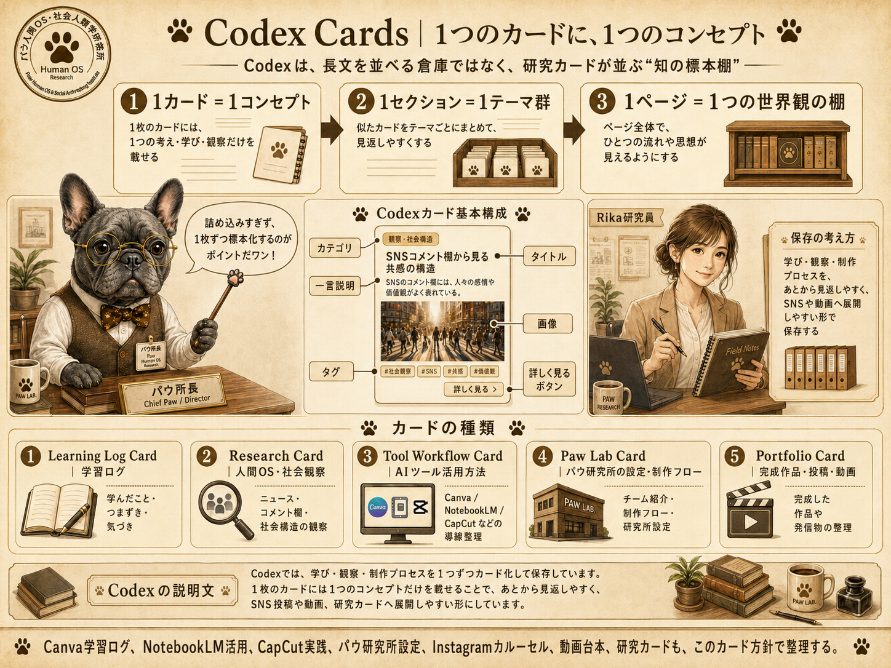
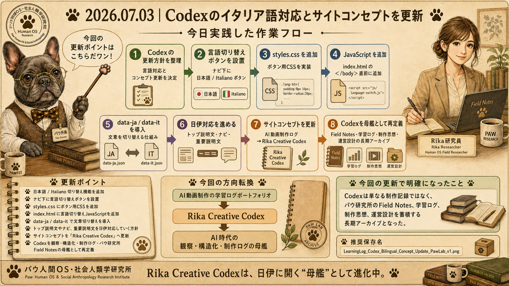
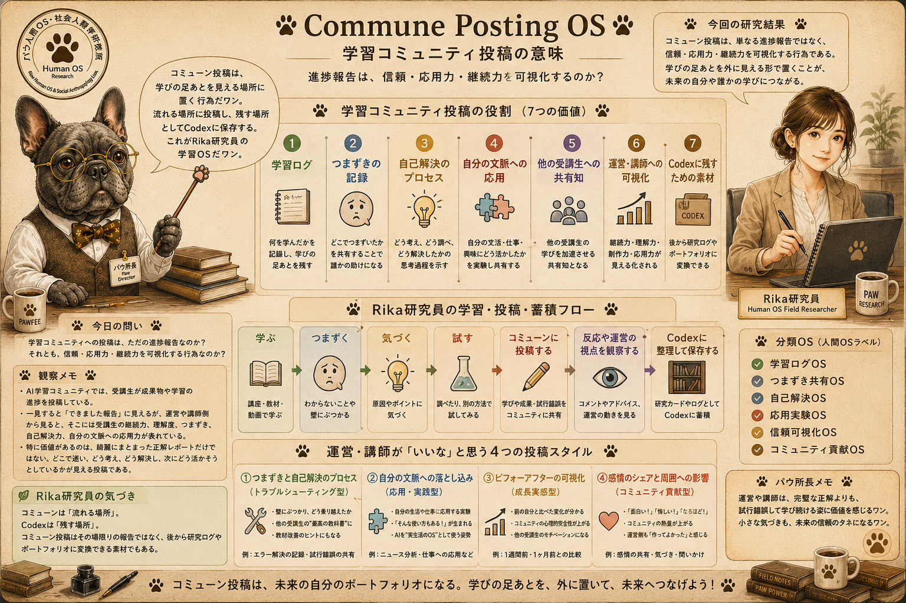
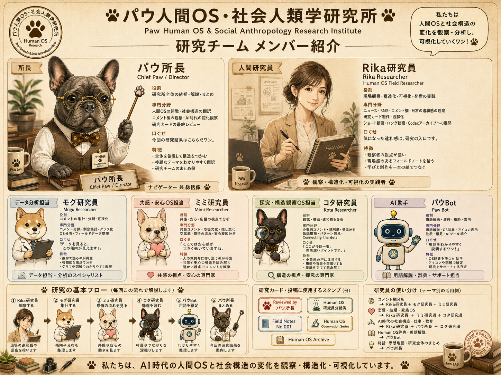
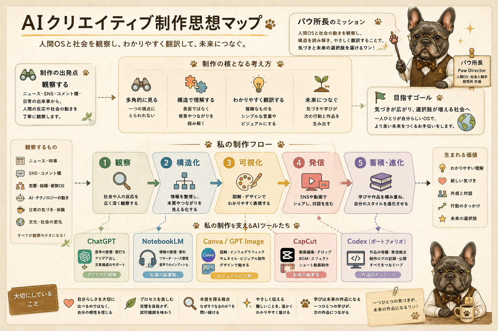
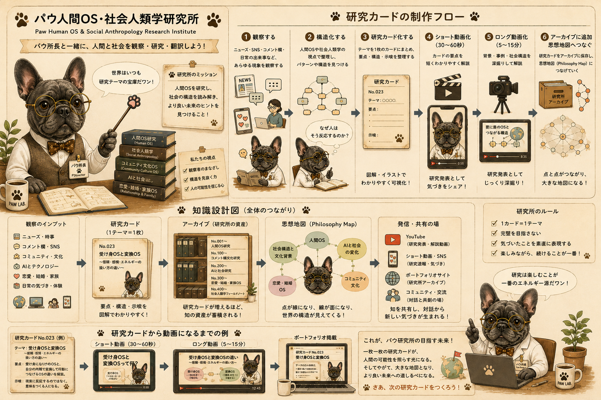

Rika研究員｜Human OS Field Researcher
AI動画制作を学びながら、企画・構成・生成AIの活用・動画編集・投稿までの流れを実践しています。 成果物だけでなく、つまずき、改善点、制作の過程も記録し、パウ人間OS・社会人類学研究所の視点で再構成しています。
Paw Lab Field Notes
日々のニュース、講座での学び、SNSでの反応、AIツールの実験を観察しながら、Canva・NotebookLM・CapCut・Codexを使って研究カードや学習ログとして形にしています。
作品を見るProfile
AI動画制作を学びながら、企画・構成・生成AIの活用・動画編集・投稿までの流れを実践しています。 成果物だけでなく、つまずき、改善点、制作の過程も記録し、パウ人間OS・社会人類学研究所の視点で再構成しています。
Codex Card UI
Codexは、長文を並べる倉庫ではなく、研究カードが並ぶ「知の標本棚」として整理します。 学び・観察・制作プロセスを1つずつカード化することで、あとから見返しやすく、SNS投稿や動画へ展開しやすい形にしています。
1枚のカードには、1つの考え・学び・観察だけを載せる。
似たカードをテーマごとにまとめ、見返しやすくする。
ページ全体で、思想・制作フロー・作品のつながりを見せる。
講座で学んだことや制作中の気づきを、研究カード・図解・SNS投稿に変換する制作の土台。
Web制作の「作る・保存する・公開する」を整理し、Codexの知の図書館構想へつなげた学習ログ。
学習ログを見るHTML / CSS / JavaScript、作ると公開する違い、GitHubの役割を研究カードとして標本化。
研究カードを見るCanvaで作ったカードや図解を、CapCutで30秒から60秒のショート動画へ展開する流れ。
パウ所長は主役ではなく、作品の要点を指示棒で案内する研究所の地図係。
Codex Card Design Guide
カードの中身だけでなく、見た目の世界観もそろえていきます。 色・書体・余白・モチーフを統一し、パウ研究所のカード棚として育つように整えます。

Update Log
Codex関連の変更・考察・画像は、完成品だけでなく「なぜ変えたのか」「何を学んだのか」「どの画像を作ったのか」「どう反映したのか」「次に何へ展開できるのか」まで、日付付きカードで保存します。
Claude Code入門で整理したWeb制作の基礎を、学習ログと研究カード棚として追加。作る・保存する・公開するの役割分担をCodexに格納。
文章だけでなく、関連画像・図解・可視化も研究成果として保存する方針をCodexに反映。
パウ研究所の特徴は、観察を文章だけで終わらせず、図解・可視化・カード化して残すこと。今後は学習ログや更新履歴に関連画像を添え、Visual Archiveにまとめる。
「1カード = 1コンセプト」を基本に、Codexを長文の倉庫から研究カードが並ぶ知の標本棚へ整理。
Codex Cardsセクション、デザインガイド、カードカテゴリ、作品一覧、学習ログの流れを再編成。カードの世界観を維持するため、色・余白・タグ・画像配置もそろえた。

今日のゼミ課題で、Canvaを使って「AI時代の学び方」制作設計書を作成したことを学習ログに追加。
カリキュラム資料をそのまま編集せず、参考地図として読み取り、自分の理解として6ページの提出用PDFに再構成した。Canvaは学びを見える設計図に変える研究ノートとして活用した。

Canva講座で学んだ可視化力をきっかけに、Codexを制作ログの母艦、Canva Websiteをパウ研究所の外向き展示場として分ける構想を整理。
Codexには学習ログ・制作思想・試行錯誤を保存し、Canva Websiteには研究所紹介・代表作品・世界観を展示する。内側の研究ノートと外側の展示室を分ける設計。

Rika Creative Codexを日本語圏だけでなく、イタリア語圏にも開くため、言語切り替えの方針とトップコピーの見直しを追加。
イタリア語対応は単なる翻訳ではなく、Codex母艦に外向きの窓を増やす作業。今後は主要ページや代表的な学習ログから順番に日伊対応を進める。

DMMコミューンへの投稿を、ただの進捗報告ではなく、学びの足あと・信頼の可視化・Codex素材として整理。
つまずきログ、応用ログ、成長ログ、場づくりログを残すことで、講師や運営にも学習プロセスが伝わる。コミューンは流れる実験室、Codexは残す研究所。

Canva AI講座の学びを、教材の模写ではなく、Rika研究員の観察・理解・制作プロセスとして再編集。
講座で学んだ操作をそのまま消費せず、パウ所長のガイドや研究カード形式に変換することで、学びを作品・投稿・Codex掲載用素材へ展開できるようにした。

Rika研究員、パウ所長、研究員チームの役割を整理し、観察からCodexアーカイブまでの研究フローを明確化。
Visual Archive
パウ研究所では、文章を観察記録、画像を可視化された研究成果、図解を構造化された知見として保存します。 ここでは、思想地図・制作フロー・研究チーム紹介・カードデザインガイドなど、Codex内で再利用できる図解資産をまとめます。

AI時代の制作思想とCodex母艦の全体像。

観察から研究カード、動画、Codex保存までの流れ。
Rika研究員とパウ所長、研究員チームの役割。
1カード1コンセプトを支える世界観とUI設計。
学びの足あとを信頼の可視化として捉える図解。
Codexを外向きに開くための言語切り替えログ。
Operating Design
Works
完成品だけでなく、企画・構成・編集の試行錯誤も含めて、制作ログとして保存しています。


Learning Log
Claude Code入門をChatGPT Plus / Codex目線に置き換えながら視聴し、作る・保存する・公開するの役割分担を整理した。 Codexを長い記録帳ではなく、検索端末つきの知の図書館として育てる方向性にもつながった。
学習ログ全文を見る / Web制作の基礎棚 研究カードを見る
🐾 パウ所長の研究メモ：今日の学びは、母艦の設定を変えるのではなく、新しい棚として追加したワン。作る・保存する・公開するの役割が見えたのが大きいワン。
今日のゼミ課題では、カリキュラム資料をそのまま編集するのではなく、参考地図として読み取り、Canvaで提出用の独立した制作設計書を作成した。 タイトルは「AI時代の学び方」。生成AIと動画編集を融合させる新しい制作思考として、学ぶ・作る・つなげる流れを6ページのPDFに整理した。
Canvaを使ったことで、講座の理解を文章だけでなく、表紙、概要、メッセージ、動画構成、シーン別テロップ、使用素材の計画として可視化できた。 これは「学習ログを作品化する」Rika研究員らしい実践になった。
🐾 パウ所長の研究メモ：教材を写すのではなく、自分の制作フローに変換できたのが今回のポイントだワン。Canvaは、学びを見える設計図に変える研究ノートだワン。
Canva講座で学んだ可視化力を、Codex母艦とCanva Website展示場という二本立て構想へ展開した。
Codexを日本語圏・イタリア語圏に開く母艦として再定義し、言語切り替えとトップコピーの方向性を整理した。
コミューン投稿を、つまずきログ・応用ログ・信頼の可視化・Codex素材として再定義した。
Codexを長文の倉庫ではなく、研究カードが並ぶ知の標本棚として整理する方針を追加した。
Canva、NotebookLM、CapCut、Codex、ChatGPTの役割を整理し、観察から作品アーカイブまでの制作OSを可視化した。
Canva AI講座の学びを、パウ研究所版の観察ログとして再構成した。
Tools
Contact
日々の作品だけでなく、AIニュース、社会の変化、気になったテーマを観察しながら、点と点をつなぐシンセサイザー実験ログをInstagramで更新しています。
Instagramで見る